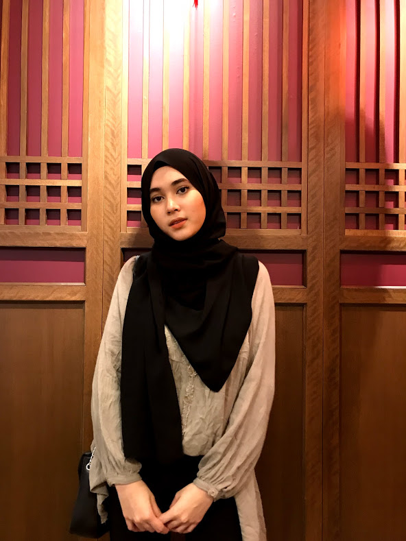

Hi! My name is Nuramirah binti Khairulzaman and I am 22 years old this year. I live in Rawang, Selangor and I am second year student at the Universiti Teknologi MARA in Segamat. I am currently taking Bachelor's Degree of Information Science (Hons) Record Management and I learn about classification, filing systems, coding, and many more. I am shy person and friendly at the same time. I love watching movies and listening to musics before i go to sleep.
Facts About Me
❀ I was born in Kuantan and raised in Selangor.
❀ I am the second youngest of five children.
❀ When I was younger, I wanted to be a Doctor because I want to save people's life.
❀ I love watching Harry Potter movies.
❀ I often read a novel whenever I have a free time.
❀ I am good with numbers and math.
❀ I am committed and responsible person especially when it comes to finishing task.
Personal Information
✿ Father's Name: Khairulzaman bin Ramli
✿ Mother's Name: Shazana binti Abdul Manaf
✿ Date of Birth: 7 March 1999
✿ Languages: Malay, English, Arabic
✿ Gender: Female
✿ Marital Status: Single
✿ Nationality: Malaysian
✿ Religion: Islam